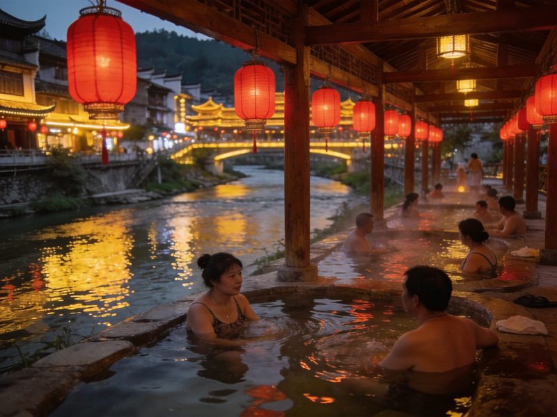
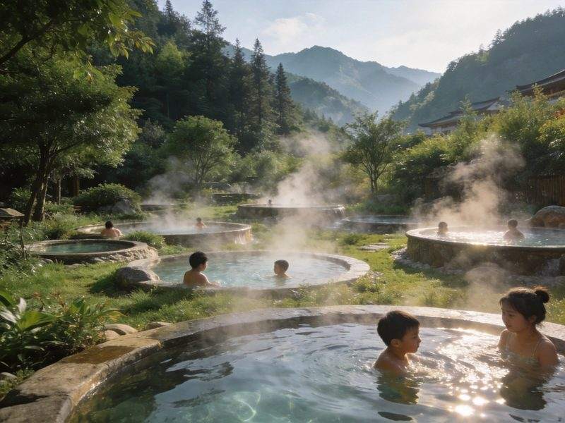

泡汤
石阡古温泉 · 400余年「温泉之花」
石阡温泉地处县城汤山镇，古称「温泉」「汤山温泉」，已有 400 多年历史，属中低矿化度温泉，含氡、锶、偏硅酸等多样矿物质，既可沐又可饮，被称为「温泉之花」。温泉源头出水温度高，经池水调配后可浸泡，配以温泉池、休息区与疗养空间，是石阡康养度假的核心地标。
👍 必泡理由：可饮可浴的古温泉在国内少见，泡后身心松弛；日出前/傍晚人少，体验更佳。
如果你在找一座能泡汤、又能喝汤的温泉古城——贵州东部石阡正合适。它被中国矿业联合会授予「中国温泉之乡」称号，城郊的古温泉起源于 400 多年前，是国内少有的可饮可浴的天然温泉。白天在古温泉体验区泡汤解乏，傍晚沿着夜郎泉水街散步吃小吃，白天可顺路去尧上仡佬族村寨吃一顿地道的仡佬家宴，或走进黔东万亩茶山看云雾茶田。本文含 1 日/2 日双方案、温泉怎么泡、交通、住宿、美食、预算与避坑全讲清。
石阡县城一天：上午古温泉泡汤，下午泉水街+古城，晚间看毛龙灯/听仡佬古歌，节奏轻快。
「住进石阡」才够味——首日泡汤+古城，次日尧上仡佬寨+茶山，把康养与人文一次拿下。
把几个最有辨识度的体验单独拎出来讲清——看什么、为什么出名、怎么玩最值。
石阡温泉地处县城汤山镇，古称「温泉」「汤山温泉」，已有 400 多年历史，属中低矿化度温泉，含氡、锶、偏硅酸等多样矿物质，既可沐又可饮，被称为「温泉之花」。温泉源头出水温度高，经池水调配后可浸泡，配以温泉池、休息区与疗养空间，是石阡康养度假的核心地标。
👍 必泡理由：可饮可浴的古温泉在国内少见，泡后身心松弛；日出前/傍晚人少，体验更佳。

像多数温泉古城一样，石阡沿着温泉源水自发形成了夜郎泉水街——水街两岸是木质吊脚楼与茶楼酒肆，入夜灯光倒映水中，游客可沿水街吃小吃、喝茶、看地戏/毛龙灯等仡佬民俗表演，也能买到石阡苔茶、藤编等本地风物。
👍 必逛理由：一条街浓缩了石阡的市井夜色与温泉文化，适合晚间散步放空。

温泉之外，石阡藏着一整片黔东山水——尧上仡佬族村寨保留着吊脚楼与山居生活，可吃仡佬家宴、听古歌；山间的石阡苔茶茶园云雾环绕，可采茶、制茶、品一壶贵州名茶。把「泡汤」与「山野人文」结合，才真正读懂石阡。
👍 延伸理由：想让温泉之旅更有层次，这两处是石阡的「第二张名片」。
石阡不通高铁，以自驾/中转+包车为主，但温泉区紧邻县城，步行可达。
| 方式 | 🚗 自驾（推荐） | 🚄 高铁/飞机+接驳 |
|---|---|---|
| 走法 | 沪昆高速/S32 湄石田坪滩出口，导航「石阡古温泉」直达，县城路况较好、停车方便。 | 高铁至铜仁站或凯里站，转乘班车/包车至石阡县城（约 1.5–2.5h）；也可飞贵阳龙洞堡后自驾或包车。 |
| 时长/成本 | 贵阳/重庆/长沙出发约 3–5h | 车费区间较大，包车更省时 |
| 💡 一句话建议：自驾最方便，可从县城步行到温泉区；周边可串梵净山/镇远古镇。 | ||
石阡住宿以温泉区度假酒店与县城快捷/民宿为主，泡汤房体验最佳。
仡佬族山乡风味，酸辣为主、取材山野，泡完温泉来一顿最落胃。
区间为保守–宽松，实际以选择为准；温泉门票需另算。
| 项目 | 1日快充版 | 2日深泡版 |
|---|---|---|
| 温泉门票（常规） | 约 80–150 | 约 80–200（两日） |
| 大交通（周边往返人均） | 约 80–200 | 约 120–300 |
| 住宿 | —（当日往返） | 约 200–800 |
| 餐饮 | 约 60–120 | 约 120–250 |
| 村寨/茶园/小交通 | 约 30–80 | 约 80–180 |
| 合计 · 人均 | 约 150–280 | 约 400–850 |